When I finished my DocuSign + Salesforce Flow project, I wanted to go further. DocuSign was powerful, but it was mostly declarative — an AppExchange package did the heavy lifting. I wanted to build something where I owned every layer of the integration.
So I built a Twilio SMS integration in Salesforce. No AppExchange package. No pre-built connector. Just Apex, Named Credentials, Custom Metadata, and Flow — wired together from scratch.
And yes, I used AI as a coding partner for the Apex parts. I'll explain exactly what that meant and why I think it's worth being open about.
What It Does
When an Opportunity is marked Closed Won in Salesforce, the automation:
- Checks whether the Opportunity Owner has a phone number — Phone first, Mobile as fallback
- If neither exists — creates a High Priority Task alerting the owner
- If a number is found — calls an Apex method that fires a Twilio SMS
- On success — updates a custom SMS Sent checkbox on the Opportunity
- Posts a Chatter message confirming who was messaged and which Opportunity triggered it
- On failure — creates a Task with the exact error message for the owner to investigate
Everything automated. Everything traceable. Nothing silent.
Why This Project Is Different From DocuSign
My previous project used the DocuSign Apps Launcher — an AppExchange package that handled authentication, templates, and Flow actions out of the box. Powerful, but declarative. This project has no package.
| Layer | DocuSign Project | Twilio Project |
|---|---|---|
| Authentication | Package handled OAuth | Named Credentials — built manually |
| API calls | Pre-built Flow action | Custom Apex callout |
| Configuration | Package settings UI | Custom Metadata Type |
| Flow action | Installed with package | Built as Invocable Apex Method |
| Code required | Zero | Apex class + Test class |
💡 The real value
The Twilio project forced me to understand what the DocuSign package was doing silently. That understanding is the real portfolio value here.
The Stack — All Free to Start
| Tool | Purpose | Cost |
|---|---|---|
| Salesforce Developer Org | Flow, Apex, Named Credentials | Free |
| Twilio Trial Account | SMS delivery via REST API | Free trial credit (~$15) |
| Custom Metadata | Secure config storage | Free — native Salesforce |
| Named Credentials | Secure API authentication | Free — native Salesforce |
💳 Twilio trial note
Trial accounts come with free credit to purchase a sending number and make real API calls — no credit card required. Buy the number using trial credit, and release it once testing is done to preserve your remaining balance.
Configuration
Custom Metadata: Config Without Hardcoding
The first decision was where to store Twilio credentials and phone numbers. Three options exist:
- Hardcode in Apex — never do this. Credentials in code is a security risk and a deployment nightmare
- Custom Settings — works, but less flexible for deployment
- Custom Metadata — deployable between orgs, no hardcoding, queryable without SOQL governor limits
Custom Metadata won. I created a Twilio_Config__mdt type with three fields:
| Field | What it stores |
|---|---|
Account_SID__c | Twilio Account SID |
Twilio_Phone_Number__c | The number SMS is sent from |
Fallback_Phone_Number__c | Backup number if owner has none |
In Apex, retrieving this requires no SOQL — one line, no governor limit impact:
Twilio_Config__mdt config = Twilio_Config__mdt.getInstance('Default');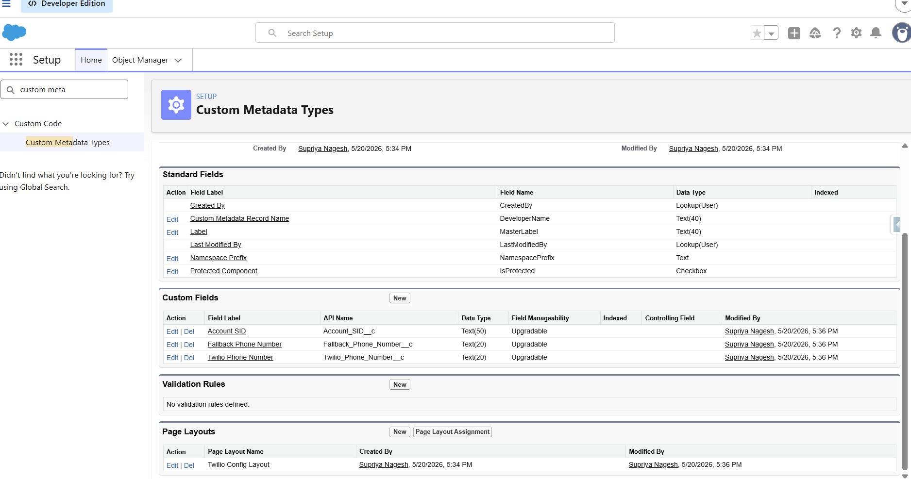
Custom Metadata — Twilio_Config__mdt setup
Authentication
Named Credentials: Keeping Auth Token Out of Code
The Twilio Auth Token is essentially a password — it should never appear in Apex code, Custom Fields, or debug logs. Named Credentials solve this.
External Credential setup
- Authentication Protocol: Password Authentication
- Identity Type: Named Principal — one set of credentials for the whole org
- Username: Twilio Account SID · Password: Twilio Auth Token
Named Credential setup
- URL:
https://api.twilio.com— linked to the External Credential above
In Apex, Salesforce injects the authentication header automatically — the Auth Token never appears in code:
req.setEndpoint('callout:Twilio/2010-04-01/Accounts/' + accountSid + '/Messages.json');
// Auth Token never touches the code. Salesforce handles it.🐛 Undocumented gotcha
Permission Set Mappings for External Credentials are no longer configured on the External Credential page. Go to Permission Set or Profile → External Credential Principal Access and enable it from there. This is completely undocumented and cost me real time.
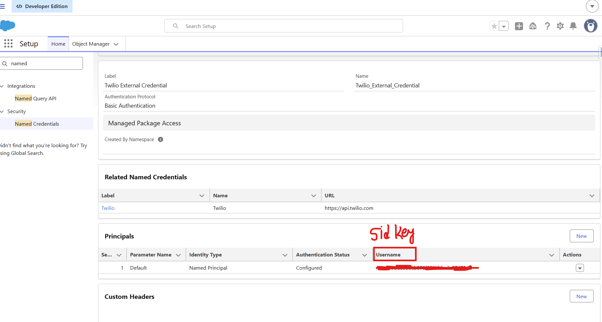
Named Credential → External Credential → Principals
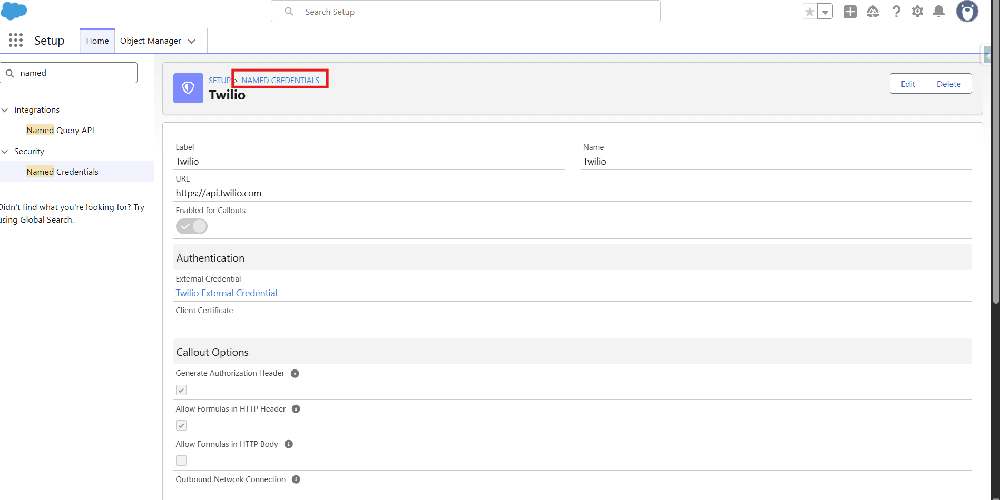
Named Credential detail — URL, authentication and callout settings
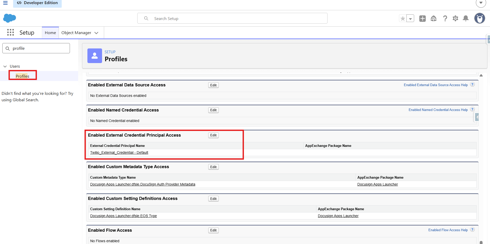
Permission Set — External Credential Principal Access
Development
The Apex Class: Where AI Came In
I used AI as a coding partner. In a real project, speed and accuracy matter as much as authorship. I reviewed every line, understood every decision, and debugged every error myself. Here's what each part does and why it matters:
@InvocableMethod — makes it callable from Flow
@InvocableMethod(label='Send Twilio SMS')
public static void sendSMS(List<SMSRequest> requests) { ... }
// Without this annotation, Flow cannot see the class at all.SMSRequest inner class — the input contract
Defines what data Flow passes into Apex. Each @InvocableVariable becomes a mappable field in the Flow action — the contract between Flow and Apex.
@future(callout=true) — the most important thing I learned
@future(callout=true)
private static void sendSMSAsync(String toNumber, String oppName) { ... }⚡ Non-negotiable
Flow-triggered Apex cannot make HTTP callouts in the same transaction. The @future annotation runs the callout asynchronously. This is the standard Salesforce pattern — skip it and the class throws an error every time.
Phone number fallback logic
String toNumber = (req.ownerPhone != null && req.ownerPhone != '')
? req.ownerPhone
: fallbackNumber;
// Ternary operator: one-line if/else. Owner phone or Custom Metadata fallback.Testing
Apex Test Class: 100% Coverage
Every Apex class needs a test class with at least 75% coverage to deploy. I hit 100%. The key pattern for testing HTTP callouts is HttpCalloutMock — Salesforce blocks real HTTP calls in test context:
private class TwilioMockResponse implements HttpCalloutMock {
public HTTPResponse respond(HTTPRequest req) {
HttpResponse res = new HttpResponse();
res.setStatusCode(201);
res.setBody('{"sid": "SM123", "status": "queued"}');
return res;
}
}Four test methods covered:
- SMS sent successfully with owner phone
- Fallback number used when owner has no phone
- API failure handled gracefully
- Null amount handled without crashing
Automation
The Flow: Orchestrating Everything
Record-Triggered Flow on Opportunity, firing when Stage = Closed Won. The phone number logic was an interesting design decision — a single Decision element with three outcomes, both paths feeding one variable:
| Outcome | Condition | Action |
|---|---|---|
| Has Phone | Owner.Phone is not null | Assign to varRecipientPhone |
| Has Mobile | Owner.MobilePhone is not null | Assign to varRecipientPhone |
| Default | Neither field has a value | Create High Priority Task |
One variable, one Apex call — regardless of which path was taken. Cleaner than two nested Decision elements.
Opportunity → Closed Won
↓
Check Owner phone (Phone → Mobile fallback)
↓ Neither found ↓ Number found
Create Task Call Apex → Twilio SMS
(no number) ↓ Success ↓ Fault
SMS_Sent__c = ✅ Task (error msg)
Chatter post on Opportunity
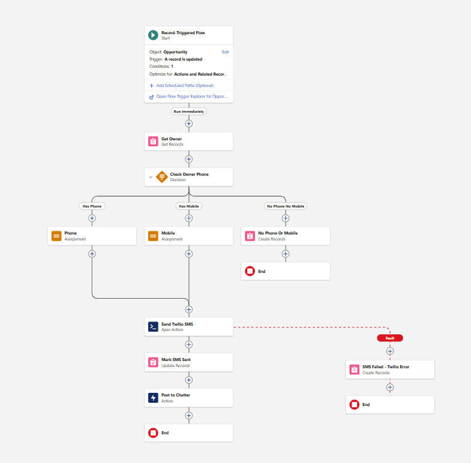
Flow canvas — Send SMS on Closed Won
The Gotchas — What No Tutorial Will Tell You
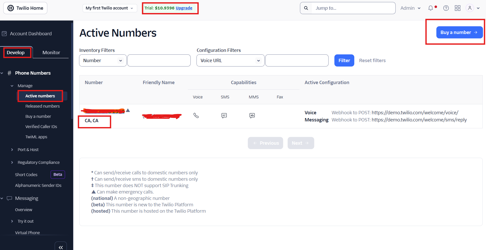
Twilio trial account with free credit
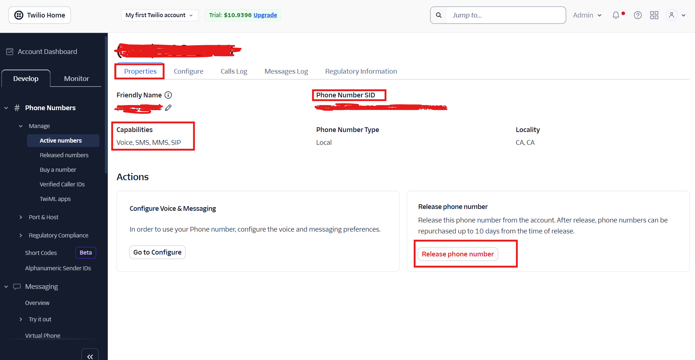
Release phone number after testing to preserve credit
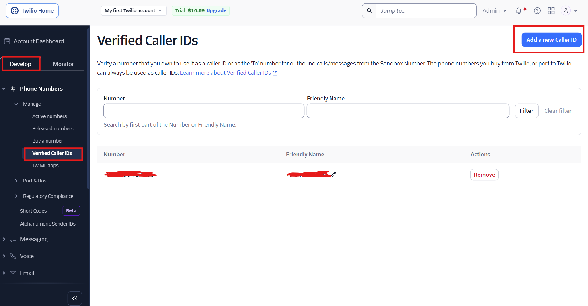
Receiving number must be verified to receive SMS on trial accounts
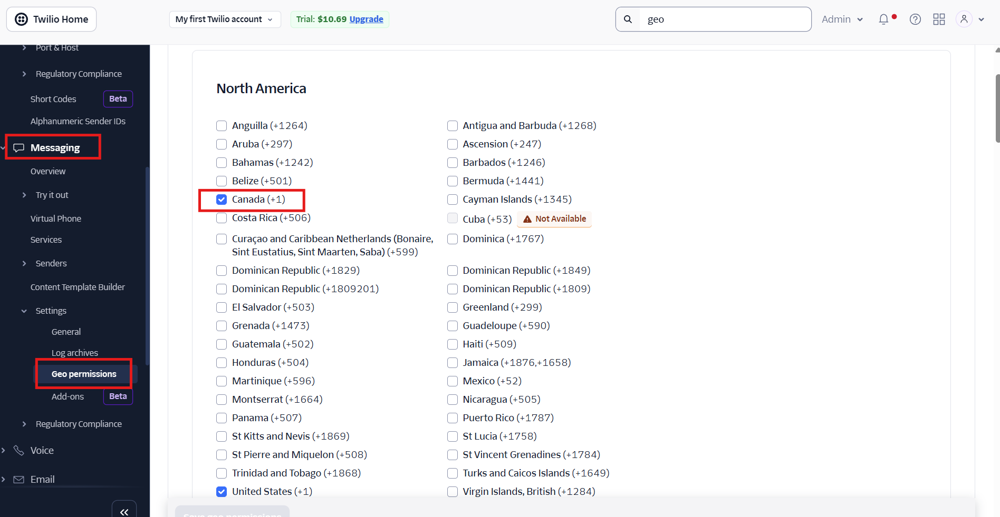
Geo Permissions — enable destination countries before testing
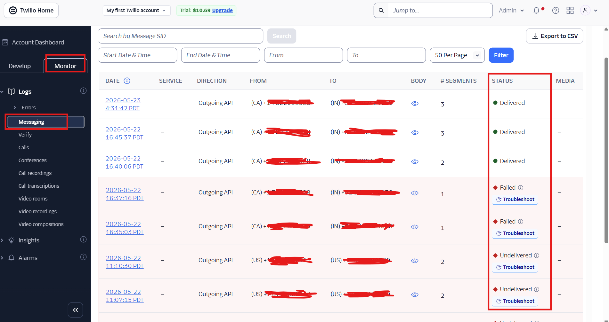
Salesforce debug logs — successful callout
End-to-End Results
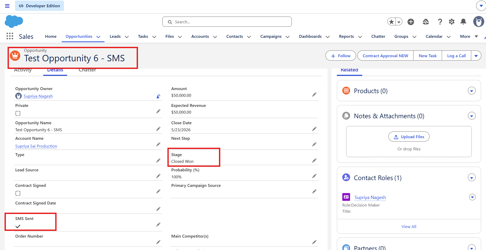
Opportunity — SMS Sent checkbox updated to True after successful send
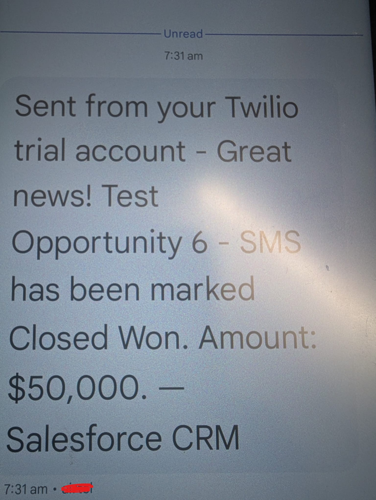
SMS received on mobile
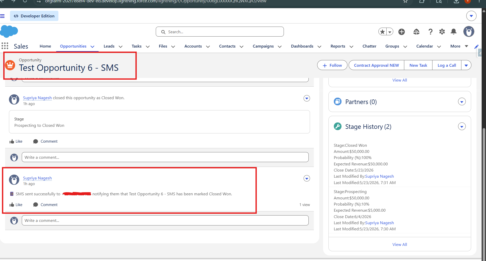
Chatter post on Opportunity confirming SMS sent
On Using AI as a Coding Partner
I used AI to help write the Apex class. I did not use it to think through the architecture, design the edge cases, debug the errors, or make the decisions about how pieces connected.
If you're a Salesforce Admin thinking about crossing into development — AI makes that crossing more accessible than ever. But understanding what you build still matters.
Understanding the code matters more than writing it. In a real team, you'll review others' Apex constantly. Being able to read, explain, and debug Apex is the skill. It always will be.
Try It Yourself
Everything here uses free tools. The full build — Custom Metadata, Named Credentials, Apex class, Test class, and Flow — takes about a day if you follow this guide and know where the gotchas are. Now you do.
Built on Salesforce Developer Org · Twilio REST API · Apex · Salesforce Flow · Named Credentials · Custom Metadata